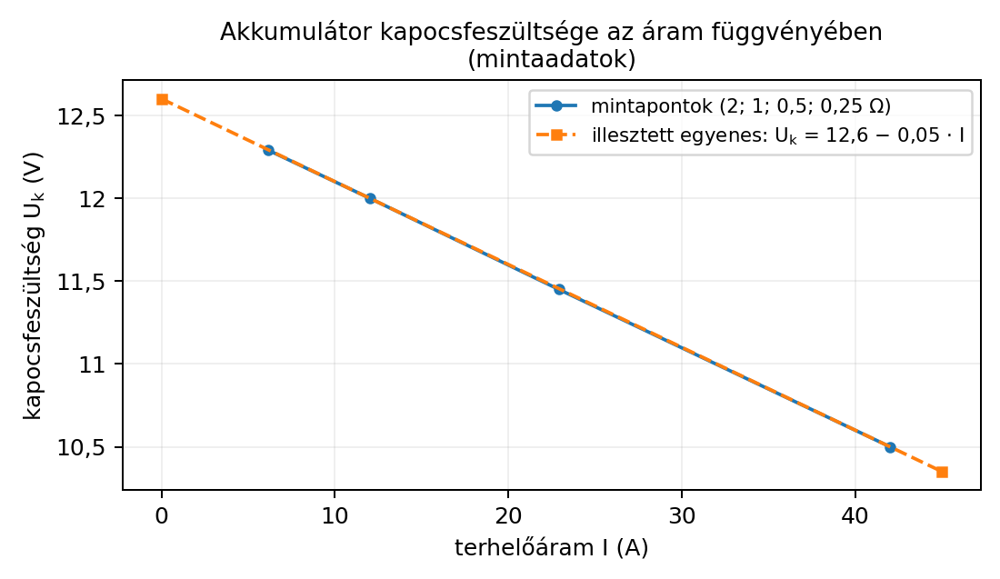

4.5 Valódi feszültségforrás:
üresjárás, rövidzárás és illesztés
A kapcsolódó elmélet: tankönyv, 4.5 alfejezet.
4.5.1 Belső ellenállás,
kapocsfeszültség terhelésre – kidolgozott példa
Példa. Egy 12 V-os akkumulátor belső ellenállása
.
Az indítómotor hideg állapotban
ellenállású. Számítsuk ki az áramot, a kapocsfeszültséget, a motor
teljesítményét és a belső veszteséget.
Megoldás lépésenként.
Áram:
Kapocsfeszültség:
Ellenőrzés a másik képlettel:
,
a kettő egyezik. ∎
A terhelés (motor) teljesítménye:
A belső ellenállás vesztesége:
A forrás leadott összes teljesítménye:
.
Ellenőrzés teljesítménymérleggel:
,
tehát a számítás helyes.
A példa jól mutatja, hogy a kapocsfeszültség terhelés alatt 12 V-ról
9 V-ra esett, miközben a forrás belső vesztesége 180 W volt – ez az
energia hő formájában az akkumulátorban jelentkezik.
4.5.2 Gyakorló: valódi forrás
generátorral
A forrásmodell
(,
,
,
,
illesztés, soros és párhuzamos elemek) a zárlatszámítás előfeltétele,
ezért érdemes sok feladaton begyakorolni. A generátor négy szinten ad
véletlen feladatot: A – terhelt forrás
(,
,
,
);
B – belső ellenállás üresjárási és terhelt mérésből,
illesztés; C –
azonos elem sorosan vagy párhuzamosan; D –
és
két terhelési pontból, illetve két eltérő akkumulátor kiegyenlítő árama.
A lap jelzi a tipikus hibákat (illesztésnél 100 %-os hatásfok,
párhuzamos elemek feszültségének összeadása,
),
és lépésenként megmutatja a megoldást.
Statikus változat (mint a PDF-ben)
Valódi feszültségforrás – feladatgenerátor (mintafeladat:
belső ellenállás két mérésből)
A nyomtatott kiadás rögzített sora alább található; a 7. feladat a
lenti Gyakorlati útmutató kétpontos kiértékelését, a 8. a fenti
kiegyenlítő-áramos példát ismétli.
Rögzített feladatsor. A HTML-kiadás gyakorlója négy
szinten végtelen sok hasonló feladatot ad; az alábbi nyolc feladat
rögzített, a megoldókulcs a sor végén található.
(A) Egy forrás üresjárási feszültsége E = 24 V,
belső ellenállása Rb = 500 mΩ. Rt = 11,5 Ω
terhelést kapcsolunk rá. Mekkora az áram, a kapocsfeszültség, a terhelés
teljesítménye és a hatásfok?
(B) Egy forrás üresjárási feszültsége 12,6 V;
Rt = 2 Ω terheléssel a pólusain 12 V-ot mérünk. Mekkora a
terhelő áram, a belső ellenállás és a becsült zárlati áram?
(B) Egy E = 9 V, Rb = 1,5 Ω forráshoz
mekkora terhelés illesztett, mekkora a legnagyobb levehető teljesítmény
és ekkor a hatásfok?
(C) 6 darab 1,2 V-os, 50 mΩ belső ellenállású
NiMH-cella sorosan kapcsolva: mekkora az eredő forrásfeszültség, az
eredő belső ellenállás és a zárlati áram?
(C) 6 darab 1,2 V-os, 50 mΩ belső ellenállású
NiMH-cella párhuzamosan kapcsolva: mekkora az eredő forrásfeszültség, az
eredő belső ellenállás és a zárlati áram?
(A) Egy forrás üresjárási feszültsége E = 4,5 V,
belső ellenállása Rb = 1,5 Ω. Rt = 3 Ω terhelést
kapcsolunk rá. Mekkora az áram, a kapocsfeszültség, a terhelés
teljesítménye és a hatásfok?
(D) Egy akkumulátoron két terhelési pontot mérünk:
I1 = 10 A-nél 11,6 V, I2 = 25 A-nél 11 V. Mekkora
a belső ellenállása és a forrásfeszültsége?
(D) Két akkumulátort (E1 = 12,7 V,
E2 = 12,3 V, mindkettő Rb = 30 mΩ) párhuzamosan
kötnek (hibásan!). Mekkora kiegyenlítő áram folyik, és mekkora lesz a
közös kapocsfeszültség?
Megoldókulcs.
A rögzített feladatsor megoldókulcsa
Feladat
Szint
Eredmény
1.
A
I = 2 A; Uk = 23 V; Pt = 46 W; η = 0,958
2.
B
I = 6 A; Rb = 100 mΩ; Ik = 126 A
3.
B
Rt = 1,5 Ω; Pmax = 13,5 W; η = 0,5
4.
C
Ee = 7,2 V; Rb,e = 300 mΩ; Ik = 24
A
5.
C
Ee = 1,2 V; Rb,e = 8,33 mΩ; Ik =
144 A
6.
A
I = 1 A; Uk = 3 V; Pt = 3 W; η = 0,667
7.
D
Rb = 40 mΩ; E = 12 V
8.
D
Ikiegy = 6,67 A; Uk = 12,5 V
Kidolgozott megoldások.
Soros kör: I = E / (Rb + Rt) = 24 V / (0,5 Ω +
11,5 Ω) = 2 A.
Kapocsfeszültség: Uk = E − I · Rb = 24 V − 2 A ·
0,5 Ω = 23 V (= I · Rt).
A terhelés teljesítménye: Pt = Uk · I = 23 V · 2 A
= 46 W.
Hatásfok: η = Rt / (Rb + Rt) = 95,8
%.
Üresjárásban I = 0, ezért E = U0 = 12,6 V.
Terhelő áram: I = Uk / Rt = 12 V / 2 Ω = 6
A.
Belső ellenállás: Rb = (E − Uk) / I = (12,6 − 12)
V / 6 A = 100 mΩ.
Zárlati áram (becslés, nem mérjük!): Ik = E / Rb =
126 A.
Illesztés: a terhelés teljesítménye akkor maximális, ha
Rt = Rb.
Pmax = E2 / (4 · Rb) = (9
V)2 / (4 · 1,5 Ω) = 13,5 W.
Hatásfok: η = Rt / (Rb + Rt) = 0,5 = 50
% – ugyanannyi teljesítmény vész el a belső ellenálláson, mint amennyi a
terhelésre jut.
Sorosan a forrásfeszültségek és a belső ellenállások összeadódnak:
Ee = 6 · 1,2 V = 7,2 V.
Rb,e = 6 · 0,05 Ω = 300 mΩ.
Zárlati áram: Ik = Ee / Rb,e = 24 A –
ugyanannyi, mint egy elemé.
Párhuzamosan (azonos elemeknél) a feszültség nem adódik össze:
Ee = 1,2 V.
Rb,e = Rb / n = 0,05 Ω / 6 = 8,33 mΩ.
Zárlati áram: Ik = Ee / Rb,e = 144 A –
6-szerese egy elemének.
Soros kör: I = E / (Rb + Rt) = 4,5 V / (1,5 Ω
+ 3 Ω) = 1 A.
Kapocsfeszültség: Uk = E − I · Rb = 4,5 V − 1 A ·
1,5 Ω = 3 V (= I · Rt).
A terhelés teljesítménye: Pt = Uk · I = 3 V · 1 A
= 3 W.
Hatásfok: η = Rt / (Rb + Rt) = 66,7
%.
Mindkét pontra igaz: Uk = E − Rb · I. A két
egyenlet különbségéből E kiesik.
Rb = (U1 − U2) / (I2 −
I1) = (11,6 − 11) V / (25 − 10) A = 40 mΩ.
E = U1 + Rb · I1 = 11,6 V + 0,04 Ω · 10
A = 12 V.
Ellenőrzés a 2. pontra: E − Rb · I2 = 11 V ✓
A hurokban a két forrás szembe kapcsolódik: a hajtó feszültség
E1 − E2 = 0,4 V, az ellenállás 2 · Rb =
0,06 Ω.
Kiegyenlítő áram: I = (E1 − E2) / (2 ·
Rb) = 6,67 A.
Közös kapocsfeszültség: Uk = E1 − I ·
Rb = 12,5 V (= E2 + I · Rb).
Tanulság: néhány tized volt különbség is tíz–száz amperes áramot hajt a
kis belső ellenállásokon – ezért tilos eltérő töltöttségű
akkumulátorokat párhuzamosan kötni.
4.5.3 Gyakorlati útmutató:
akkumulátor belső ellenállásának mérése
A Valós életbeli alkalmazás két pontból (üresjárás + egy terhelés)
számolt. Pontosabb és megbízhatóbb, ha több terheléssel mérünk, és a
pontokat grafikonon ábrázoljuk: a kapocsfeszültség az áram lineáris
függvénye,
,
ezért a pontok egy egyenesre esnek. Az egyenes tengelymetszete
,
meredekségének ellentettje
– és egy rosszul mért pont azonnal „kilóg” a sorból.
Cél. Egy
-os
ólomakkumulátor (vagy szerszámakkumulátor)
és
értékének meghatározása négy terheléssel, grafikus kiértékeléssel, és
ebből a zárlati áram becslése – rövidzár nélkül.
Eszközök és anyagok. Két multiméter
(feszültségmérésre, illetve áramméréshez egy egyenáramú lakatfogó vagy
10 A-nél nagyobb áramhoz sönt); terhelő ellenállások:
,
,
és
(ez utóbbi két párhuzamos
-ból),
rövid idejű terhelésre legalább
-osak,
hűtött kivitelben – vagy gyári autóakkumulátor-terhelő; terhelésbírású
kapcsoló; olvadóbiztosító az akkumulátor pozitív pólusának közelében (a
legnagyobb mérőáramnál nagyobb, de a vezetéket védő névleges árammal –
ellenőrizendő: a terhelő és a vezeték adatai szerint); elegendő
keresztmetszetű, rövid vezetékek; szigetelt szerszám; védőszemüveg; a
nem használt pólus szigetelősapkája.
Biztonsági korlát. A mérés törpefeszültségű (ELV),
de az akkumulátor zárlati árama több száz amper lehet: a szerszám vagy
egy gyűrű, karóra a pólusok között azonnal izzásig melegszik, ív és
égési sérülés keletkezhet, ólomakkumulátornál gázrobbanás is. Gyűrűt,
karórát, fém karkötőt vegyél le; a kapcsokat rövidre zárni tilos; a
terhelő ellenállás a mérés után percekig forró. Töltés közben vagy
közvetlenül utána ne mérj (durranógáz) – jól szellőző helyen dolgozz. A
gyakorlat tanműhelyben, oktatói felügyelet mellett végezhető.
Az öt biztonsági szabály a mérőkör szerelésére
értelmezve. Az akkumulátort nem lehet „lekapcsolni”: a forrás
mindig feszültség alatt van. Ezért a mérőkört úgy szereljük, hogy a
terhelési ág árammentes legyen: (1) a terhelő kapcsoló nyitva, a
biztosítóbetét kiemelve; (2) a kiemelt betétet magadnál tartod, a
kapcsolón „Ne kapcsold be!” jelzés; (3) a biztosító utáni oldalon
méréssel ellenőrzöd, hogy a terhelési ágon nincs feszültség; (4) a
földelés és rövidre zárás itt nem alkalmazható – az akkumulátor kapcsait
rövidre zárni éppen tilos; (5) a szabadon maradó pólust
szigetelősapkával takarod. A vezetékeket csak ebben az állapotban kötöd
fel, előbb a terhelő oldalon, utoljára az akkumulátor pólusán.
Lépések.
Mérd meg az üresjárási feszültséget közvetlenül a pólusokon
(kapcsoló nyitva):
.
Helyezd be a biztosítóbetétet. Kapcsold be a legnagyobb ellenállású
()
terhelést 5–10 s-ra, és ez alatt olvasd le egyszerre a pólusokon mért
-t
és az áramot. Kapcsold ki.
Ismételd a többi terheléssel
(;
;
),
két mérés között hagyd pihenni az akkumulátort és hűlni a
terhelést.
Foglald táblázatba az
párokat.
Ábrázold a pontokat: vízszintesen
,
függőlegesen
.
Illessz rájuk egyenest (vonalzóval vagy táblázatkezelő lineáris
trendvonalával). A tengelymetszet
,
a meredekség ellentettje
:
.
Becsüld a zárlati áramot:
.
Rövidzárral soha ne mérd!
Mintaadatok a kiértékelés gyakorlásához – modellből
számolt értékek
(,
;
,
),
nem mért adatok:

Akkumulátor kapocsfeszültsége az áram
függvényében (mintaadatok) - Modellből számolt mintaadatok, nem mérés: E
= 12,6 V, R_b = 0,05 Ω. A tengelymetszet E = 12,6 V, a meredekség −0,05
V/A, tehát R_b = 0,05 Ω; I_k ≈ 12,6 / 0,05 ≈ 252 A (becslés, rövidzárral
nem mérjük).
A grafikonról: az egyenes
-nál
-on
metszi a függőleges tengelyt
(),
és
-ről
-re
nőve
-ről
-ra
esik:
,
így
.
Miért érdemes négy pontot mérni? Ha a
-os
mérésnél egy laza csatlakozás miatt
-ot
olvasnánk le
helyett, a grafikonon ez a pont
-tal
az egyenes alá esne, és azonnal feltűnne; ha viszont csak ebből és az
-os
pontból számolnánk,
jönne ki – közel 40 %-os hiba.
Ellenőrzési pontok. A pontok egy egyenesre esnek
(néhány század volt eltéréssel);
és a tengelymetszet közel egyezik; a terhelőáram és a terhelő ellenállás
adataiból számolt
is egyezik az árammérő értékével. Ha egy pont kilóg: laza vagy oxidos
csatlakozás, felmelegedett (megnőtt ellenállású) terhelő, vagy túl
hosszú terhelés alatt lemerülő akkumulátor az oka – ismételd meg a
mérést.
Tipikus hibák.
A feszültséget a terhelő ellenálláson mérik a pólusok helyett: ekkor
a vezetékek és csatlakozások ellenállása is
-be
kerül (a 6. feladat megoldása is erre figyelmeztet).
Túl hosszú terhelés: az akkumulátor közben merül, a terhelő
melegszik, a későbbi pontok lejjebb kerülnek.
Hideg és meleg akkumulátor összehasonlítása: az ólomakkumulátor
belső ellenállása hidegen nagyobb – a mérési hőmérsékletet mindig
rögzíteni kell.
Csak két pontból (vagy csak üresjárásból) dönteni: egy rossz pont az
egész eredményt elviszi.
Dokumentálás. Jegyzőkönyv: dátum, mérést végző,
akkumulátor típusa és névleges adatai (feszültség, kapacitás,
indítóáram), töltöttségi állapot, hőmérséklet, a műszerek típusa, a
táblázat, a grafikon az illesztett egyenessel, a kapott
,
és a becsült
,
valamint értékelés a gyártói adatokhoz képest (ellenőrizendő: az
akkumulátor gyártói adatlapja – belső ellenállás, hidegindító
áram).
4.5.4 Kidolgozott példa: a hálózat
mint valódi forrás (ohmos közelítés)
Biztonsági korlát. A hálózati feszültségen végzett
mérést csak jogosult szerelő végezheti; a tanuló itt csak a megadott
feladatadatokkal számol.
Adott (példaadat): egy lakás konyhai aljzatán a
feszültség terhelés nélkül
;
egy 230 V-on névlegesen 2000 W-os vízforraló bekapcsolása után
.
Keresett: a hurok ellenállása és a zárlati áram
becslése az aljzatnál.
A vízforraló ellenállása:
.
A terhelőáram:
.
A hurok (forrás és vezeték oda-vissza) ellenállása:
.
A becsült zárlati áram:
.
Értékelés. Egy B16-os kismegszakító pillanatkioldója
kb.
között működik, a biztos kioldáshoz a sáv felső határát,
-t
kell elérni (ellenőrizendő: MSZ EN 60898-1; lásd a Kismegszakítók és
kioldási jelleggörbék (B, C, D) (tankönyv, 18.2) alfejezetet). Mivel
,
a feltétel teljesül. Ellenőrzés: egy néhány tized ohmos hurok lakásban
reális nagyságrend.
Megjegyzés. Ez ohmos, egyenáramú gondolatmenet. A
valódi mérőműszer impedanciát mér, a hálózati feszültség két leolvasás
között magától is változhat (a néhány voltos különbséget ez erősen
torzíthatja), a meleg vezető ellenállása pedig nagyobb. A szabályos
mérés és kiértékelés (mérési bizonytalanság, korrekció) a Mérések II.:
hurokimpedancia, zárlati áram, FI-vizsgálat (tankönyv, 24.3) alfejezet
tárgya.
4.5.5 Önellenőrzés
Igaz-e, hogy a valódi feszültségforrás kapocsfeszültsége terhelés
hatására nő?
Egy 12 V-os forrás belső ellenállása 0,4 Ω, a terhelés 3,6 Ω. Mennyi
az áram és a kapocsfeszültség?
Mi a teljesítményillesztés feltétele, és mekkora a hatásfok abban az
állapotban?
Miért veszélyes különböző feszültségű akkumulátorokat párhuzamosan
kötni?
Soros kapcsolásnál a belső ellenállás nő vagy csökken?
4.5.6 Feladatok
1. feladat (A). Fogalmazd meg, mit jelent a belső
ellenállás, és melyik üzemállapotban egyezik meg a kapocsfeszültség az
üresjárási feszültséggel, és milyen (elméleti) forrásnál egyezne meg
terhelés alatt is?
2. feladat (A). Egy 24 V-os tápegység belső
ellenállása 1 Ω. Mekkora az üresjárási feszültség és a rövidzárási
áram?
3. feladat (B). Egy akkumulátor üresjárási
feszültsége 12,6 V. Ha 1 Ω-os ellenállással terhelik, a kapocsfeszültség
11,2 V. Számítsd ki a belső ellenállást, a zárlati áramot és a terhelés
teljesítményét! Ez a feladat készíti elő a hálózati zárlatszámításhoz
használt forrásmodellt.
4. feladat (B). Egy 4,5 V-os laposelem belső
ellenállása 1,5 Ω. Határozd meg az illesztett terhelést, a maximális
terhelési teljesítményt, az áramot és a hatásfokot illesztésben! Mennyi
a terhelési teljesítmény 0,5 Ω, illetve 4,5 Ω terhelésnél?
5. feladat (C). Négy darab 1,5 V-os, 0,3 Ω belső
ellenállású elemet először sorba, majd párhuzamosan kötünk. Számítsd ki
mindkét esetben az eredő feszültséget, az eredő belső ellenállást és a
zárlati áramot! Elemezd, miért változott meg a zárlati áram a soros
esethez képest, és miért nem szabad különböző feszültségű elemeket
párhuzamosan kötni.
6. feladat (D). Van egy ismeretlen belső ellenállású
12 V-os akkumulátorod, egy 1 Ω-os, legalább 200 W-os terhelő
ellenállásod és egy multimétered. Biztonsági korlát. A
feladat csak tanműhelyi, törpefeszültségű környezetre vagy jogosult
oktató felügyeletére vonatkozik; hálózati feszültségen önállóan ne mérj.
Hogyan határoznád meg a belső ellenállást és a zárlati áramot anélkül,
hogy a kapcsokat rövidre zárnád? Végezd el a számítást, ha az üresjárási
feszültség mért értéke 12,4 V, a terhelő ellenálláson pedig terhelés
közben 10,2 V-ot mérsz. (A több terheléses, grafikus kiértékelésű
pontosabb módszert a fenti Gyakorlati útmutató írja le.)
7. feladat (B). Alakítsd át az
,
soros forrásmodellt áramforrás-modellé! Számítsd ki mindkét modellel az
terhelés áramát és feszültségét!
8. feladat (C). Ugyanazt a vízforralót egy hosszú
hosszabbító végén használják: a feszültség terhelés nélkül
,
terhelve
(példaadat). Becsüld a terhelőáramot, a hurokellenállást és a zárlati
áramot! Mit mondhatsz a kioldási feltételről B16-os és C16-os
kismegszakítónál?
4.5.7 Megoldások
Önellenőrzés – válaszok
Hamis. Terhelés hatására áram folyik, a belső ellenálláson
feszültség esik, ezért a kapocsfeszültség csökken.
;
.
Illesztéskor
,
a hatásfok ekkor 50 %.
A nagyobb feszültségű elem a kisebbet tölteni kezdi; a belső
ellenállások kicsik, ezért nagy kiegyenlítő áram folyik, ami
túlmelegedést és tüzet okozhat.
Soros kapcsolásnál a belső ellenállások összeadódnak, tehát nő.
Feladatok megoldásai
1. feladat (A). A belső ellenállás a valódi
feszültségforrás belső, soros ellenállása, amelyen a terhelőáram
feszültséget ejt, és amely a zárlati áramot korlátozza. A
kapocsfeszültség üresjárásban és idealizált, zérus belső ellenállású
forrásnál mindig az üresjárási feszültséggel egyezik meg; üresjárásban
,
így
.
3. feladat (B). Terhelésnél az áram:
.
A belső feszültségesés:
.
Így
.
Zárlati áram:
.
Terhelési teljesítmény:
.
4. feladat (B). Illesztett terhelés:
.
Maximális teljesítmény:
.
Áram:
.
Hatásfok:
(50 %). Ha
:
;
,
.
Ha
:
;
,
.
A két utóbbi teljesítmény egyenlő (az
szorzatuk
– a modell szimmetriája), de a hatásfok eltérő.
5. feladat (C). Soros:
;
;
.
Párhuzamos:
;
;
.
A soros esethez képest a párhuzamos kapcsolásnál a feszültség negyedére
csökkent, a belső ellenállás tizenhatodára, ezért a zárlati áram
négyszeresére nőtt. Különböző feszültségű elemek párhuzamos kötésekor a
feszültségkülönbségből és a kicsi belső ellenállásokból nagy kiegyenlítő
áram keletkezik.
6. feladat (D). A mérés menete:
1. Kapcsold le a terhelést, mérd meg az üresjárási feszültséget
().
2. Ellenőrizd a multimétert és a mérőzsinórokat.
3. Csatlakoztasd az 1 Ω-os terhelő ellenállást a kapcsokra, majd azonnal
mérd a kapocsfeszültséget közvetlenül az akkumulátor pólusain
().
4. Rövidre zárni tilos, a terhelést rövid ideig, csak a szükséges
mérésig hagyd rákapcsolva, mert nagymértékben melegszik.
Számítás:
;
;
.
Ha a kapocsfeszültséget nem közvetlenül az akkumulátor pólusain, hanem a
terhelő ellenálláson mérjük, a csatlakozó vezetékek ellenállása is a
számított
-be
kerül; ezért a pólusokon fellépő zárlati áram a becsültnél nagyobb is
lehet. Pontosabb eredményhez a terhelt feszültséget közvetlenül a
pólusokon mérd. A számítás tájékoztató becslés; a zárlati áramot soha
nem mérjük valódi rövidzárral.
7. feladat (B).
,
vele párhuzamosan
.
Soros modell:
,
.
Áramforrás-modell:
,
.
A két eredmény azonos.
8. feladat (C).
;
;
.
B16-nál
,
a feltétel teljesül. C16-nál a pillanatkioldás sávja
,
a megkövetelt
:
a becslés alig nagyobb ennél, ez határeset. A közelítés
hibái és a vezető melegedése miatt nem elfogadható igazolás; szabályos
hurokimpedancia-mérés és értékelés szükséges (ellenőrizendő: MSZ HD
60364-4-41 és -6). A C16 itt nem jó választás pusztán ezért, hogy
„ritkábban old le”.
4.5.8 Áramforrás-modell és
forrásátalakítás – példák és gyakorlók
Ellenőrző példa (a következő szakasz akkumulátora).
,
,
ezért
.
Az
terhelés árama áramosztással (tankönyv, 4.2):
pontosan annyi, mint a soros modellből.
4.5.9 Teljesítményillesztés és
hatásfok – példák és gyakorlók
Példa. Egy 9 V-os elem belső ellenállása
.
Határozzuk meg az üresjárási feszültséget, a zárlati áramot, az
illesztett terhelést, a maximális teljesítményt és a hatásfokot
illesztésben.
Üresjárási feszültség:
.
Zárlati áram:
.
Illesztett terhelés:
.
Maximális terhelési teljesítmény:
.
Áram illesztéskor:
;
kapocsfeszültség:
.
Hatásfok:
,
azaz 50 %.
4.5.10 Akkumulátorok és elemek
párosítása: soros és párhuzamos kapcsolás – példák és gyakorlók
Példa. Három darab 1,5 V-os, 0,2 Ω belső ellenállású
elemet először sorba, majd párhuzamosan kötünk. Számítsuk ki az eredő
feszültséget, az eredő belső ellenállást és a zárlati áramot mindkét
esetben.
Kidolgozott példa: kiegyenlítő áram. Két
-os
ólomakkumulátor: az egyik feltöltött,
,
a másik részben lemerült,
;
mindkettő belső ellenállása
.
Párhuzamosan kötve a két forrás egy hurokban szembe kapcsolódik, a hurok
ellenállása a két belső ellenállás összege:
a közös kapocsfeszültség
(ugyanez
-ből;
több forrásra a Millman-tétel adja, lásd a Kirchhoff-törvények és
hálózatszámítás (tankönyv, 4.4) alfejezetet). Szerszám-Li-ion celláknál
a belső ellenállás ennél is kisebb lehet (ellenőrizendő: gyártói
adatlap), így ugyanakkora feszültségkülönbség még nagyobb áramot hajt.
Tanulság: már
különbség is több tíz amperes, a vezetéket és a cellát melegítő áramot
okoz – párhuzamosan csak azonos feszültségű, azonos állapotú
akkumulátorokat szabad kötni.